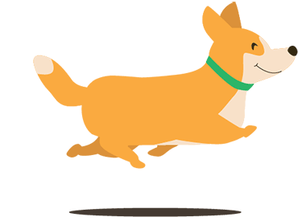

Seja bem-vindo(a) ao We Pets & We Care
o site para todos os amantes de animais!

Se você é um apaixonado por bichinhos de estimação, encontrou o lugar perfeito. Aqui no We Pets & We Care, sabemos o quanto nossos amigos animais são importantes em nossas vidas, trazendo alegria e amor incondicional para nossas casas. Por isso, estamos comprometidos em oferecer um site que ajude você a cuidar e se divertir com seus bichinhos.
Em nosso site, você encontrará uma ampla variedade de artigos escritos por especialistas em cuidados de animais, incluindo dicas de alimentação, exercícios, treinamentos, saúde e bem-estar. Estamos sempre atualizando nosso conteúdo para garantir que você tenha acesso às informações mais recentes e relevantes. Além disso, em nosso site, você pode encontrar veterinários próximos a você e um guia totalmente personalizado para lembrar de vacinas, castração e outros cuidados essenciais para o seu animalzinho.
E se você ainda não tem um amigo peludo em casa, não se preocupe, você pode conferir nossa seção Adote+ um amigo para a vida e ainda pode colocar animais para adoção.
Junte-se a nós no We Pets & We Care e juntos, vamos cuidar e amar nossos bichinhos!